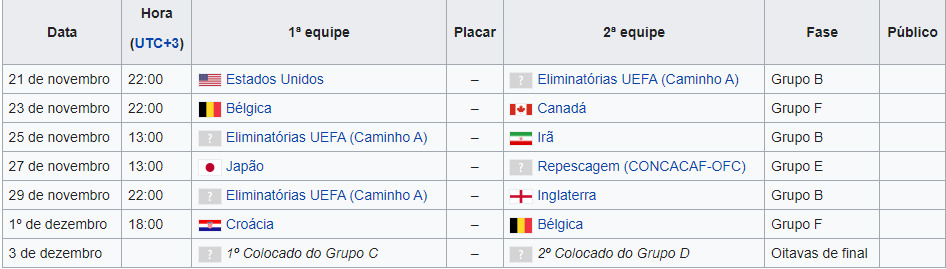

Sobre o Estádio
O Estádio Ahmed bin Ali ou Estádio Al Rayyan é um estádio multiuso localizado na cidade de Al Rayyan no Catar. Usado atualmente para jogos de futebol, é o mando do Al-Rayyan Sports Club. O estádio original, construído em 2003 e com capacidade para 21.282 pessoas, foi demolido em 2015 para dar lugar a um novo estádio para a Copa do Mundo de 2022, sediada no Catar, será uma das oito sedes. O novo estádio possui capacidade de assentos para 44.740 pessoas.O Estádio foi reinaugurado em 2020
Copa do Mundo de 2022
O estádio sediará sete partidas da Copa do Mundo FIFA de 2022, incluindo um jogo das oitavas de final.
